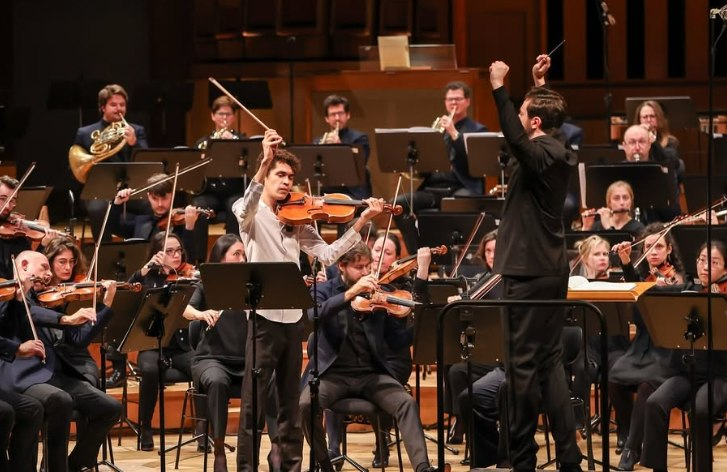
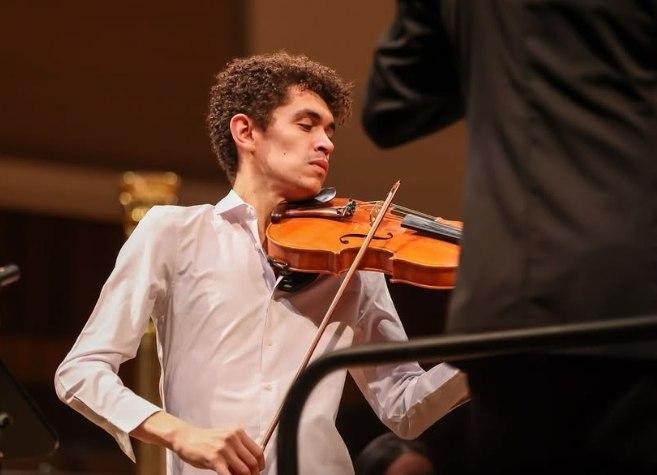
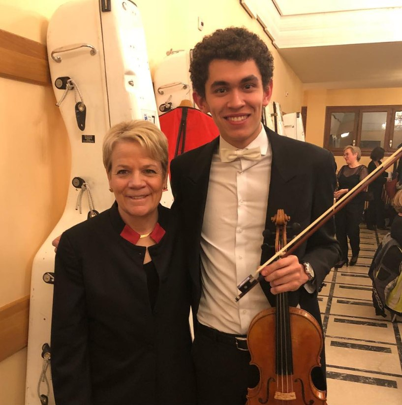

Media
Performance videos and photographs. For press use or high-resolution files, get in touch.
Performances
Photographs









Performance videos and photographs. For press use or high-resolution files, get in touch.


